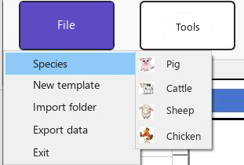
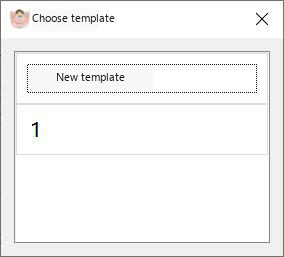
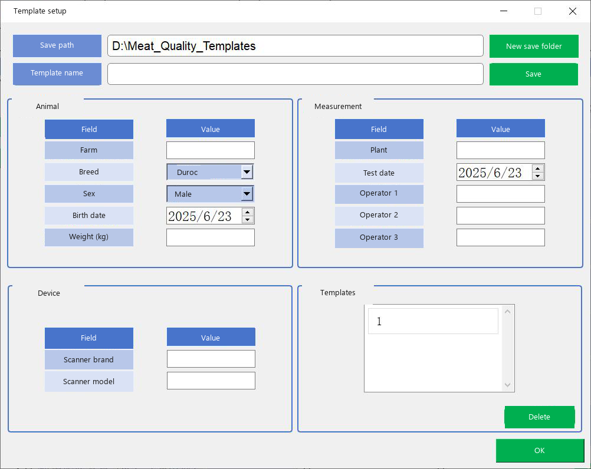
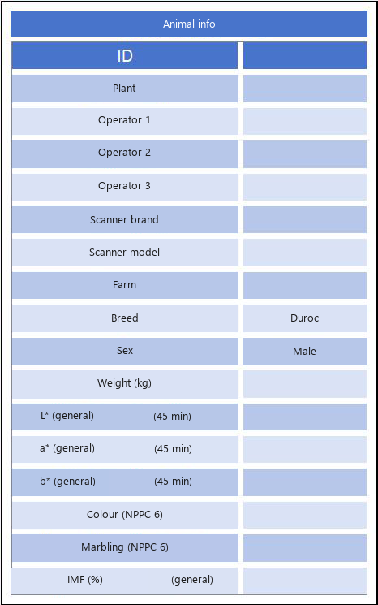
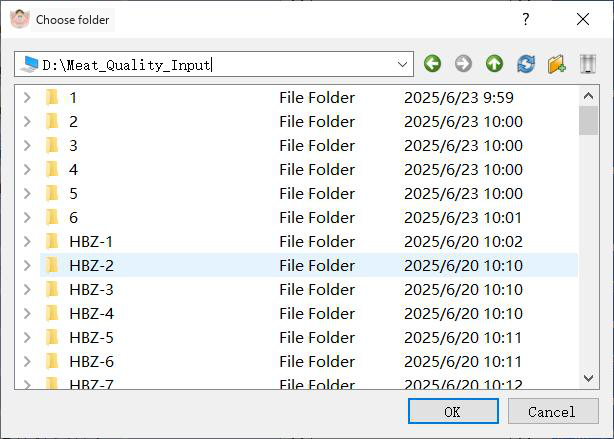
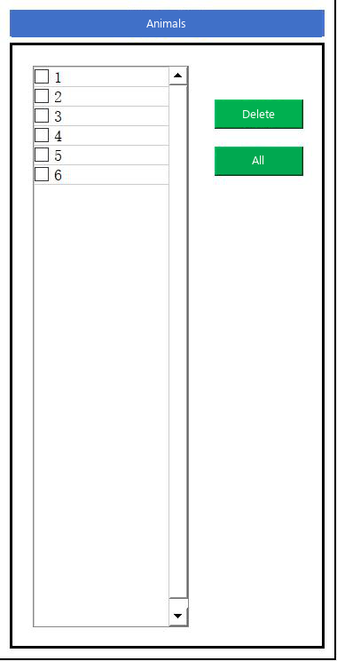
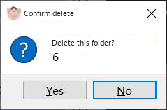
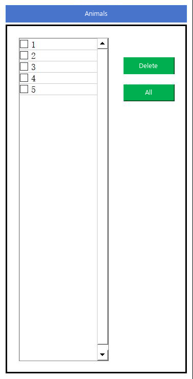

Taking images
MMQ measures images that have already been stored in folders. One folder should hold the images of one animal. The program reads the folder name into the animal list. Put the animal ID in the information table; that ID is the first column of the exported CSV file.
What to prepare
- Use a cross-section image of the meat sample. The program removes colours outside the meat before measurement and keeps the processed copies in the measure_image folder next to the executable.
- For ordinary measurement the main window shows the first three images in the folder. If the folder contains more than three images, the program shows a notice. See Measurement.
- Colour calibration needs a folder with at least two images. A folder with only one image is rejected. See Calibration.
- Collect a 45-minute sample, a 24-hour sample, or both. Marbling score and intramuscular fat are available only when the measurement time is set to the 24-hour sample.
- PorkMS, in the browser, accepts JPG and PNG. You can drop a file onto the upload area. See PorkMS.
|
 Choose the species and open a templateUse Menu File. The species defaults to pig. Choose cattle, sheep or chicken here when that is the sample. Then use New information template. A template picker opens. Saved templates are listed from D:\Meat_Quality_Templates. |

Fig. 13. Template picker.
|
 Fill in the templateIf the breed you need is not in the list, type it. Save stores the template so it appears in the picker later. Confirm also stores it and sends the fields into the animal information table on the main window. |

Fig. 15. Animal information table after a template is applied.
Fields on the animal information table:
| Field | Role |
|---|---|
| ID | Animal identifier. Written as the first column of the CSV file (the ear-tag / ID column described in the manual). |
| Slaughterhouse | Plant or laboratory name. |
| Operator 1, 2 and 3 | People who made the measurement. |
| Scanner brand and model | Device used to capture the image. |
| Breeding company | Farm or company that raised the animal. |
| Breed | Breed name. Free text is allowed. |
| Sex | Sex of the animal. |
| Live weight (kg) | Body weight at measurement. |
| L*, a*, b* (general, 45-minute sample) | Reference colour values for the 45-minute sample. |
| Meat colour score (NPPC, 6-point) | Reference colour score on the NPPC 6-point scale. |
| Marbling score (NPPC, 6-point) | Reference marbling score on the NPPC 6-point scale. |
| Intramuscular fat (%) | Reference IMF on the general scale. |
|
 Import image foldersUse Menu Tools > Import folder. Select one folder, or hold Ctrl and select several, then confirm. The folders appear in the animal list. The status bar counts imported animals and imported images. |

Fig. 17. Animal list after folders have been imported.
|
 Remove a folderSelect a folder and click Delete. Confirm the prompt. Select all followed by Delete removes every imported folder. Deleting a folder also deletes measurement data and pictures that MMQ stored for it. |

Fig. 19. The animal list after a folder has been deleted.
The next step is Parameters, if mode, model and time are not set yet, then Measurement.